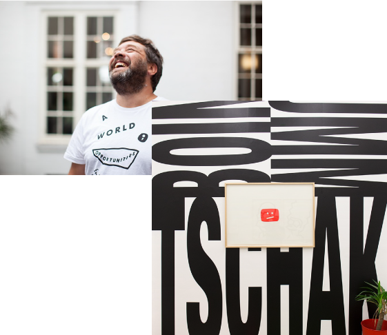
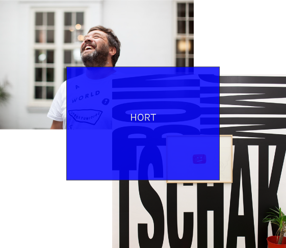

Hort x Fabio Ongarato Design
First published in desktop magazine's 'Opposits React' series, August 2015.
Interview with
Eike König
Founder and director, Hort
Fabio Ongarato and Ronnen Goren
Co-founders and directors, Fabio Ongarato Design
In 1994 in Frankfurt, Eike König founded the design studio Hort, while across the globe in Melbourne that same year, Fabio Ongarato and Ronnen Goren opened Fabio Ongarato Design. Both moves were, in part, born of a disillusion with the graphic design industry, into the structure of which the young designers didn’t see themselves fitting.
Over 20 years, two distinct, relevant studios formed. desktop gathered the founders to discuss longevity, and the things they’ve learned in two decades of running a successful practice.


Katia Pase: What have been the pivotal moments during the life of your studio, in terms of the work you’ve done, and the way you’ve approached this work?
Eike König:
If you run a studio, somehow the DNA of the studio becomes connected to your own biography – to all the experiences you have. The way I work with people and clients in the studio is all connected to what I don’t want to have. I started the studio way back around the time when I was studying graphic design, and I was really frustrated about the way it was taught; it was about repeating things rather than finding your own questions, skills and personality.
What I felt missing at uni and the ad agencies I interned in around this time too was that it wasn’t about my interests; it was about fitting myself into an existing space ,and if I didn’t succeed [at changing] I was gone. [Starting Hort] was about exploring and learning my own formal and aesthetic borders – trying to leave my safe space to figure out what could be possible.
There are seven or eight of us at Hort, including a few of us who have been together for four or five years. I like to work with clients for a longer time too, not just for a single project. This way we can build a connection not just to the people we’re working with, but with the brand and the history of the brand. For example, we’ve been working on LeBron James for Nike basketball since 2006, so as an agency we’ve become part of the history of basketball – of the visual language of basketball. It’s great to look back and see where we started and where we are now; it feels as if there was always one route in how we developed the work. It’s all connected and I think that’s good for the brand, that there’s connection between each element or each year.
Fabio Ongarato:
Thinking about some of our long-term clients, it’s always a step-by-step process. It’s a shared experience. We’re always building a certain level of understanding between both parties to achieve the best results. Most of our clients do become quite influential in their own sector, and that’s what we try and do for them. We’re not here to articulate our own voice; we’re here to articulate our client’s voice – to give them something they had never imagined.
Fabio and Ronnen, when you look over the work you’ve produced for longstanding clients, do you notice a trajectory running through it, as Eike mentioned?
Ronnen Goren:
We don’t really design to trends, so I can’t say there have been times where we’ve looked back and thought anything was a mistake. But there are many layers [to the evolution of the work], particularly when it comes to identity perception. When we design a brand mark, there’s intent to give it a timeless quality, though the language around it is disposable. The way that market consumption is geared today and the way we capture attention means that you always need to reinvent.
FO:
It’s a balance between creating a foundation and a consistency, while not making the work boring. For us it’s about finding those interesting tensions within a brand that we can express. Tensions are always exciting, like a blemish on a beautiful face.
Eike, you mentioned a refusal early on in your career to change your shape to fit an existing gap. But have you had to do that in any significant way during the years, so that your practice remains relevant – that it fits an industry or client demand?
EK:
If people want to work with me, it’s normally because of the stuff I’ve already done. As I’ve become more successful I’ve been able to deny jobs where the client was trying to push me into a space where I didn’t feel comfortable. During life you always get pushed into scenes you feel are probably not for you, but I’m always trying to get back to this moment where it’s about expanding myself, and not fulfilling something I’m not connected to. Everything I’ve tried to push, in whatever direction, is somehow expanding my own possibilities.
EK:
I imagine founding and running a studio is a different thing if you do so with other people. It’s a different way of building a company. When you start on your own, it’s all about how you think a studio should run, but if there’s more than one of you, there’s a whole different set of considerations. How has this unfolded across the life of Fabio Ongarato Design?
RG:
To put things in context, we founded Fabio Ongarato Design at a time when graphic design in Australia, and maybe globally, was really commanded by big agencies. In the mid 90s there existed a big few: Cato Brand Partners, Emery Studio, FHA Image Design et al. I also think graphic design had a particular kind of outlook for itself: it was still very much about big branding and beautifully crafted identities drawn over and over again, immaculately turned out identity style guides and big annual reports. Strategy at the time wasn’t so prevalent in practice.
Neither of us had ever worked for anyone else; we never wanted to find ourselves in one of those big studios. We went straight from education to our own practice, and fundamental to the business we are today was the belief we shared that a designer has the faculties to attack or respond to any problem with a design solution. The bigger studios weren’t going to give us this context. And so the foundation of our business was tied to our common interests and our unique perspectives: I came from an architecture background with an exhibition focus and an interest in communication and the built environment; Fab came from an advertising background but with a bent for polished art direction and a love of fashion.
This is still very much the core of the business today and, as fortune has it, the business exists in a very true multidisciplinary sense: we have architects, industrial designers, art directors and graphic designers all working within our walls. We believe that brands are looking to find new ways to connect audiences, to maintain currency and relevancy and become dynamic. [This means that] now more than ever our breadth of multidisciplinary skills and our ability to realise brands in an unexpected and multidimensional way is more central. So, we started at a time when we didn’t see ourselves fitting into a genre or a groove of what graphic design firms were, and now Fabio Ongarato Design is a culmination of unique skills that has a relevance to the clients we work with.
Let’s go back Eike to the frustrations you felt in your own graphic design education. Now, as a professor, do you have the opportunity to adjust the curriculum – to address those elements that you found lacking? What is it you’re trying to instil in your students?
EK:
The position of a professor has changed a lot during the past 10, 20 years – from the wise guy to more of a colleague. I’m three years into teaching now and I still feel like there’s a lot I need to learn. Every half year I try to assess how that half ran: what went wrong; what could be better. Sometimes something works with one generation, but not with another. It’s a lot about reacting to the people I’m confronted with. But what I’m trying to teach is personality. I’m trying to support the person behind the work to find their own voice, rather than accepting other voices.
How do you go about teaching personality or voice – do you believe you can?
EK:
There’s a struggle about how to prepare for a future in an industry full of young designers who want to do more than just work or earn money. How do you find your own position that, on one hand pays the rent, but at the same time fulfils your ideals or ethical principles?
Most of the students try to prepare themselves as a multi-skilled person who is able to fit into different kinds of business-related situations. They’d like to be a good typographer, a good illustrator, but at the same time they’re not focusing on something specific. Here, I think it’s important to question yourself. Who are you? Where did you come from? What is important to you? What influences you? If you question these things, and if you find some answers, you figure out who you are. You figure out the moments where you’re lacking, but also where you have strength. I think you’ll find people who want to work with you because of who you are.
Do you still ask yourself those questions you ask of your students?
EK:
Always. That’s why I don’t work for some parts of the industry. I do a better job when there’s a strong connection between me and the product and, if not, I just use my skills, but for me that’s not enough. I’m not just a worker I’m a thinker. If my work should support something, there should be a stronger connection between me and that something than a contract, some money and the skills.
In 20 years of Hort has your answer to the question – ‘what is important to me or in the work I’m producing?’ – gone through changes?
EK:
Oh yes for sure. When I was younger I didn’t think about it so much. It was always part of my reflection, but not as deep as it is now. The older you get, the less time you have and the more you think about how to spend your time. It will change again. Everything is in permanent change, so the answer to those questions changes too.
Fabio and Ronnen, has your vision remained united over the years?
FO:
I don’t think we’ve waivered. The fundamentals are still true to the way they were when were we started.
RG:
Hopefully this gives the work longevity. You always wonder if your relevance will endure, and I guess from a self-centric point-of-view you always think there’s something right in what you do. But you always wonder if and when there’ll be another generation that redefines the view of the world, making you irrelevant. I think about that big generation that dominated when we started, and that there will be points in time where you see new work that people gravitate towards.
EK:
I don’t believe our work should be forever. Or timeless. I always like to have a contemporary moment in the work so people in 10 or 20 years can say, “Oh it’s from that time.”
EK:
Ronnen and Fabio, can you comment on this idea of radical design as opposed to timelessness?
RG:
There is a certain classicism – or undercurrent of conservatism in some way – in our work. There is an enduring quality, and it’s certainly not arrogant to think that a solution we provide today may be still relevant tomorrow. Maybe relevance should be discussed in terms of practice [rather than outcome] – to continue to have a relevant view and remain in touch with things that are current. So in some ways we share the same view [as Eike]. We’re always moving on to the next project, but when we develop an identity, we hope it stays relevant, though we might need to refresh it from time to time.
Our work for Grill’d is a good example of something that started with an identity and brand framework. The marks remain the same, but we’ve changed the graphic language around it, hoping it will be more enduring.
EK:
I’m interested to learn about the influence of art in your design. I’ve seen some work that is connected to art, and it feels a bit romantic, or less contemporary.
FO:
Maybe it comes back to a continuum [in the work]. For us contemporary art has always been part of a nexus of influence. Design and art both play an important role in contemporary discourse because they both deal with the way we feel, how we react and how we interpret.
In design you have to achieve an outcome for a paying client, but there’s a link to art because both practices appeal to emotion. Design too can have the power to seduce the viewer and talk to perception. Good design, like art, relies on intuition – and we believe in that, in an approach that’s not always rational and not always safe. The hard part is getting businesses to go along with it but that’s our role – to take clients on that journey.
RG:
Our personal development, and the studio’s ongoing development, goes back to the fundamentals of having an open mind, an interest in the world around us, building networks and having the ability to work in a collaborative environment. If you maintain that spirit of collaboration and surround yourself with great influences and influencers, you’ll continue to grow. Otherwise you face the threat of becoming a bit internalised and stagnant.
How do you measure the success of a design outcome? Has that barometer changed over time?
EK:
A good project is much more than the end result; it’s important that it was good from the beginning. It’s about the way you meet the client, the connection between the people working, and the way you work through a brief – it’s not about money, or whether people like it. It’s about all the things other people can’t see, the internal stuff. The outcome is just the end of a rounded process.
RG:
An important word here is resonance. Resonance can be measured on a number of levels (among your peers, for example), but the view at Fabio Ongarato Design of what we do is commercially and market driven. There is a target audience. We think about position and differentiation of a brand, and resonance relates directly to this, grown from the way you find a unique voice for your client.
Are you a harsh judge of your own work?
EK:
Oh yes. I struggle a lot with my work. People don’t see that, but I do. I have a silent, high critical moment that sometimes stops me from sleeping, or makes me crazy, but I’m not working that much in the physical anymore. These days I’m much more part of the conceptual phase or the creative direction where you have to see potential and support potential and push things. But having the high critical moment of myself is OK because it means I can have that moment with things that aren’t my own.
But do you ever have that moment to such a degree that you begin to doubt your ability to move beyond it and complete a project to the vision you may have for it?
EK:
Yes, but after a couple of years you figure out how to deal with these situations. Sometimes it’s as easy as going for a walk or taking a break or doing completely different things. It’s a lot about balancing your life and being able to step back from the work you’re doing. It’s not about the hours you’re spending, but about the way you organise your moods for your brain to work. There’s a high level of concentration that needs space and there’s a high moment of relaxation and it’s a mix of this. If you’re always in the mindset, things are hard to solve. I’m living a fantastic life because I can always switch. Sometimes while I’m teaching, for example, I’m solving lots of problems for the studio just by letting my mind shift.
Eike, you mentioned the occasional thought, ‘This is something I need to learn.’ Perhaps you’re talking about a technique, or something to do with a client relationship or the way something in your work needs to function. How do you go about educating yourself, or expanding what it is that you can do as a designer or studio manager?
EK:
For me nowadays it’s not important to know every deep moment. You don’t have to learn everything by yourself. If there’s a new technology or something, I get someone else from the studio to learn it and I learn from that. In a studio situation where everyone is working as a team, it’s important to share knowledge. I have to be open to all these kinds of changes, but I don’t need to know all the details of how everything works. I need to be aware, and understand that there are lots of possibilities within the technologies, but together as a team we can figure out how to integrate these possibilities into our design work.
Hort has had people from around the world. They all bring their cultural and educational backgrounds into the studio, so all these different personalities enrich the thinking culture within our studio. The way one person thinks doesn’t need to be the right way of thinking. It opens you to other strategies. I’m a very open person who knows that my own thinking and my own skills are somehow limited to my own biography. By opening that up and saying there are so many other problem solving concepts, I can expand the pool of strategies for myself.
I learn from my students too, about their generation, which is good because I work for these generations. So it helps me learn about movements and to understand them.
FO:
For us it’s more about a deeper understanding of what we do and how we do it, rather than learning tools. It’s more an education through experience and doing and researching, than something more physical.
RG:
We have titles in the studio, there are some marks of seniority, but an older thinker and a younger thinker come into this studio with the same value of their intelligence, and the way they respond to things. It’s not necessarily skills you need to have, but talent and thinking. So for instance, making a film title may not be within your physical skill set, but you can still bring someone forward to collaborate with, and you can still apply your thinking and your interests.
RO:
Even if you’re straight out of university, you have the same capability of voice to express an idea as much as someone who has been here for many years. So there’s no hierarchy in terms of creativity.
RG:
The difference is experience in delivery, knowing how to negotiate with a client, to manage the pitfalls that exist in the process of delivering a project. It’s a deeper understanding of application.
Ronnen and Fabio, do you ever have difficulties trusting your design instincts?
RG:
We’re not really designers anymore, and knowing or fearing whether we’re right is a concern shared by the whole team. We’re not sole authors of a work. We process work with other input, so there are other perspectives involved.
RO:
Our roles have changed significantly, from actually being on the tools, to guiding strategy and creative. We orchestrate and guide the staff and the process. We train the designers coming through here so they become accountable for ideas, and not just versed in style. The one thing that the young designers bring to the studio is a relevant perspective of the world from their generation.
Are there things you’d like to try that you haven’t yet? Any other things you’d like to achieve?
EK:
I never really think about the far future. Life can change within a second, and I’ve never felt compelled to create future plans. The future is nothing yet, but whatever I’m doing now is important.
Fabio and Ronnen, what excites you most about the fields you’re working across?
FO:
We’re blessed to continue to have opportunities and clients that challenge us, plus more international work than we’ve ever done. We’ve connected ourselves more to an Asian region, especially in Hong Kong.
RG:
Australians are starting to get more recognition for the value they have as designers. The fact that people are willing to reach out and create a relationship continues to keep life exciting.